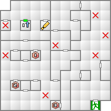
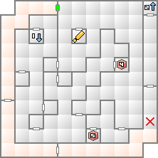
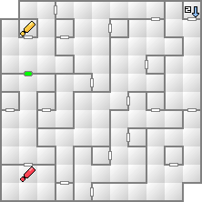

ここに出現する悪魔は、どれも低レベルな悪魔ばかりな上、異様にエンカウント率が高いので、エストマか退魔の水を使用して一気に奥まで進もう。
いきなり戦闘にはならず、クイズ勝負になる。クイズの解答については別にページを設けたので、そちらを参照して欲しい。ちなみに、間違えた場合は3階の入り口付近まで戻されてしまう。
| 能力 | LV45 HP2352 MP333 力10 知14 魔08 耐09 速14 運07 |
|---|---|
| 特技 | 悪魔の歯ぎしり 臭い息 引っかき かみつき |
| 悪魔名 | 火炎 | 氷結 | 電撃 | 衝撃 | 破魔 | 呪殺 | 万能 |
|---|---|---|---|---|---|---|---|
| 精神 | 神経 | 魔力 | 打撃 | 斬撃 | 技 | 銃撃 | |
| 召喚士ロメロ | 150 | 100 | 100 | 100 | 無効 | 無効 | 100 |
| 50 | 無効 | 10 | 100 | 100 | 100 | 100 | |
| 妖魔ロルウイ | 200 | 反100 | 100 | 100 | 50 | 無効 | 100 |
| 100 | 100 | 100 | 100 | 100 | 100 | 100 |
クイズ後の選択肢で「やさしく声をかける」を選ぶと妖魔ロルウイを5体召喚するが、そうでない場合は3体しか召喚しない。大して経験値を貰えないので少ない方を選ぶのがよいだろう。
戦闘になったら、とにかくロルウイの肉弾に当たらないようにする。食らえばHPが1になってしまうし、その状態で再び肉弾を食らえば死んでしまう。ロルウイは火炎が弱点なので、魔神ルーグのマハラギオンで焼いてしまうのがいいだろう。そのかわり氷結無効なので注意。
ロメロ自体は臭い息で毒状態にしてくるぐらいなので驚異ではない。
ここをクリアすると、造魔を失った場合にここへ来ることでドリーカドモンを入手することができるようになる。造魔を失うなどということは滅多にないが、一応覚えておこう。


